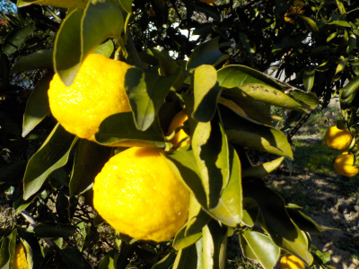
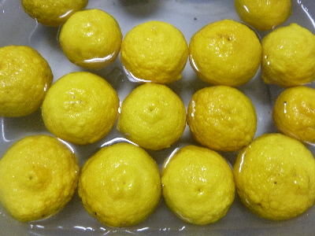
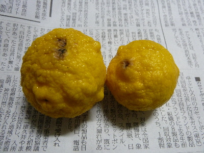
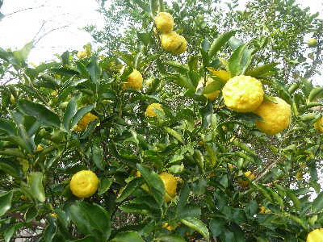
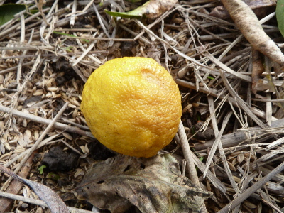
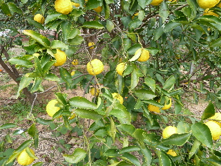
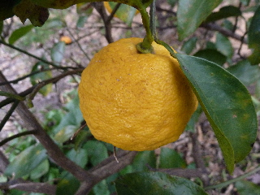
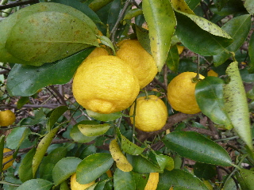
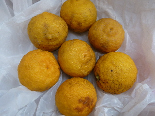
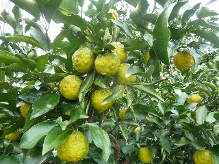

柚子を大量に収穫しました。
更新日 : 2019/01/14

暖かい日が多いせいか、すこししぼんでいました。
今年は早めに全数収穫した方がよさそうです。
冷凍保存用に加工るすのに時間がかかるので、ちょっと面倒。
更新日 : 2019/01/14

暖かい日が多いせいか、すこししぼんでいました。
今年は早めに全数収穫した方がよさそうです。
冷凍保存用に加工るすのに時間がかかるので、ちょっと面倒。
更新日 : 2018/01/08

いつでも簡単に使えるように、ゆずを細かき切って保存することにしました。
今回はゆず15個です。
これから洗って、中の房を取り出して、果汁を搾って、皮を細かく切ります。
今回時間を計ったところ、1時間50分かかりました。
時間に余裕がある時じゃないとやってはいけませんね。
更新日 : 2017/02/05

今日ゆずを6個収獲したら、2個痛んでました。
そろそろ全部収獲して加工保存したほうがいいかな。
ちょっと面倒なので、すぐやろうとは思わないです。
更新日 : 2016/11/20

今年もゆずが実ったけど、去年のゆずがまだ冷凍庫にあるなー。
ちまちま食べないで大量に消費しよう。
更新日 : 2016/02/21

今日木の下を見ると、ゆずが2つ落ちていました。
痛んだゆずが落ちたようです。
まだ木には沢山残っているんですが、これから落ちる数が増えるんだろうなー。
更新日 : 2015/12/06

持って帰って柚子湯を作りますよ。
綺麗に洗って細かく刻んでタッパーに入れます。
6個分を作るのに30分は楽に掛かりますね。
手間がかかりますが、美味しいので2週間に1回は作ります。
更新日 : 2015/02/28

ゆずの季節もそろそろ終わりなんですが、まだ木に残っています。
何かいい利用方法はないかなーっと探していたら、塩レモンじゃなくて塩柚子っていうのがあるそうです。
一度挑戦してみようと思います。美味しいといいな。
更新日 : 2014/12/14

柚子が収穫できるようになりました。
これから毎日、ゆず湯が飲めます。
作るのが面倒ですが、体が温まるし美味しいので好きです。
更新日 : 2014/03/08

今年も沢山いただきました。
木に成ったままにしているので、古くなってしぼんできました。汚れて黒ずんだり、痛んだりしてますね。
柚子の季節もう終わりです。冷凍保存するんだったら、もっと早く収穫しないといけませんね。
綺麗な部分だけ食べたいと思います。
更新日 : 2013/11/09

まだ少し青いですが、柚子が沢山実りました。
去年は柚子をハチミツで煮て柚子湯にしていましたが、今年は糖分を抑えたいので、切りたての柚子をお湯に入れて飲むようにしています。
甘くないですが、なかなか美味しいです。
冷凍庫に細かく切った柚子が沢山ストックしてあります。